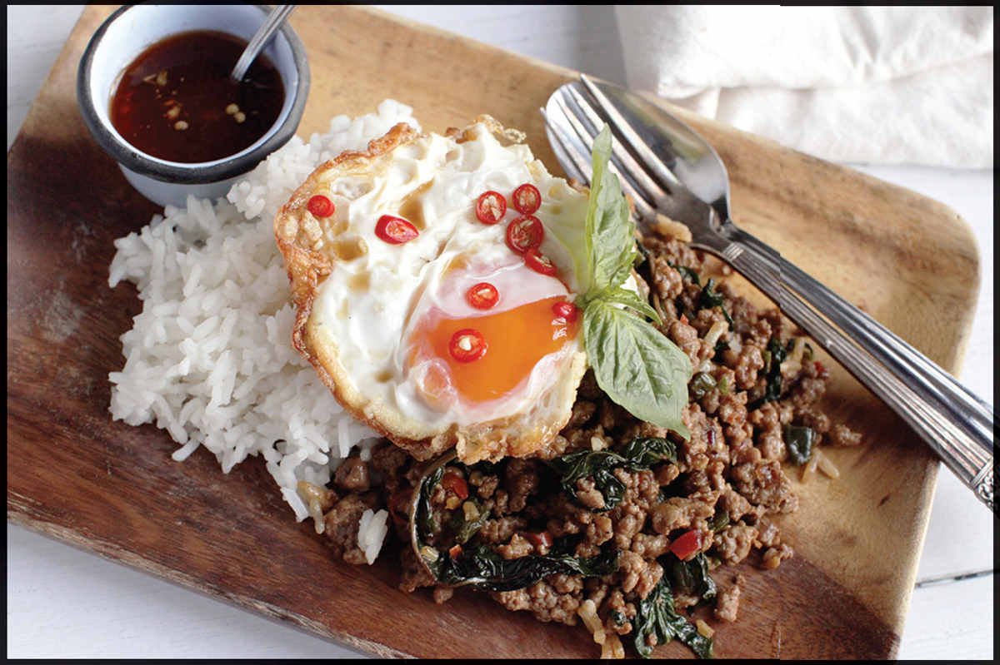
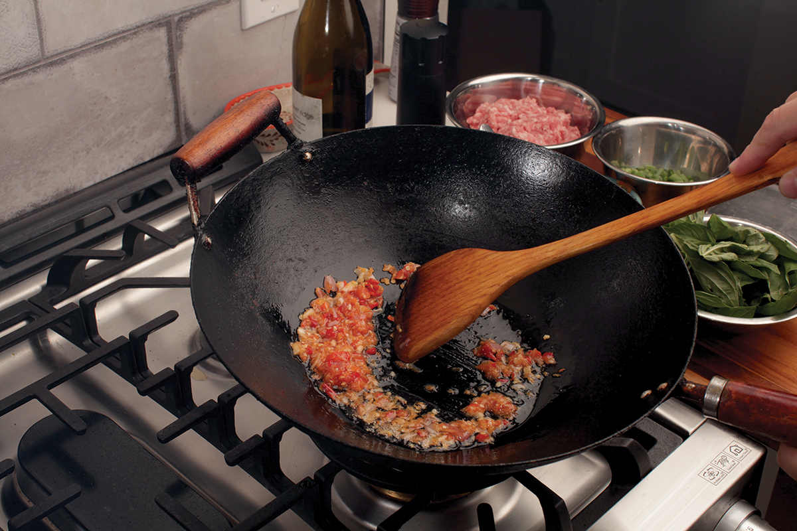
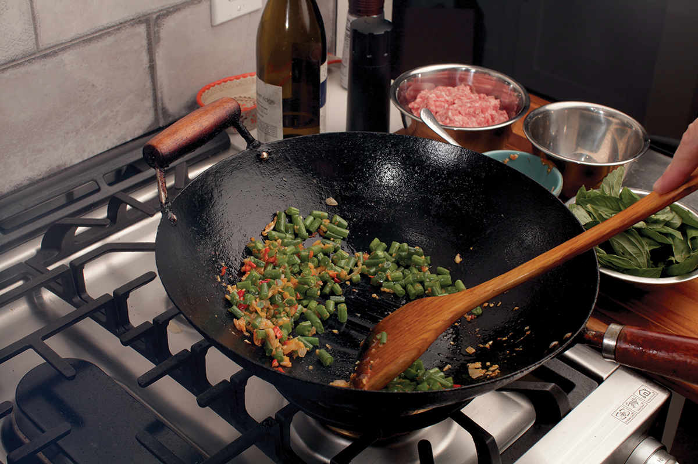
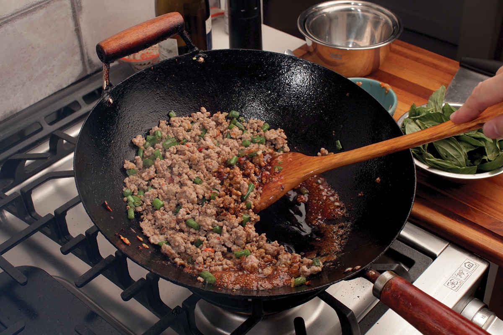
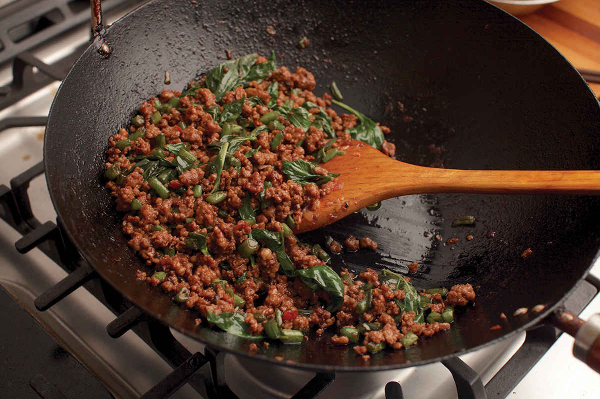

THAI-STYLE STIR-FRIED GROUND PORK WITH BASIL (PAD BAI HORAPA OR PAD KA-PRAO)
|
Yield Serves 4 |
Active Time 15 minutes Total Time 15 minutes |
For best results, start with a whole piece of pork sirloin (or chicken breast, or firm tofu, or fish, or beef sirloin, or any lean meat really) and chop by hand. For easiest results, use ground meat from the supermarket.
Two Thai bird chiles will be quite hot. Eight chiles will be blazing hot (have that cool, sweet, milky Thai iced tea handy!). For milder heat, replace the Thai bird chiles with half of a jalapeño or serrano chile.
Beans are not a traditional addition to the stir-fry, but they can be delicious and are a nice way to break up the meatiness.
If you want a more traditional version of the dish, omit the dark soy sauce and oyster sauce and season with more fish sauce to taste. For the most authentic results, look for holy basil at an Asian supermarket (bai ka-prao). Thai purple basil or plain old sweet Italian basil can be used in its place.
A mortar and pestle will produce the most flavorful results, but you can easily make the dish without one.

INGREDIENTS
6 medium garlic cloves, peeled (about 2 tablespoons/16 g)
1 medium shallot (about 1½ ounces/45 g), peeled
2 to 8 Thai bird chiles, stems removed (⅛ to ½ ounce/4 to 15 g; see Notes)
2 tablespoons (30 ml) peanut, rice bran, or other neutral oil
1 pound (450 g) lean ground pork, chicken, or beef or crumbled firm tofu (see Notes)
⅓ pound (150 g) green beans or long beans, cut into ½-inch pieces (optional; see Notes)
2 tablespoons (30 ml) fish sauce, plus more to taste
1 teaspoon (4 g) granulated sugar or palm sugar, more or less to taste
1 tablespoon (15 ml) dark soy sauce (optional; see Notes)
1 tablespoon (15 ml) oyster sauce (optional; see Notes)
1½ ounces (45 g) fresh basil leaves (about 1½ cups packed; see Notes)
To Serve:
Steamed jasmine or short-grain rice
Nam Pla Prik (optional; here)
Extra-Crispy Fried Eggs (optional; here)
DIRECTIONS
1If Using a Mortar and Pestle: Roughly chop the garlic, shallots, and chiles and place in the mortar. Add a small pinch of kosher salt. Pound with the pestle until roughly mashed (no need to form a paste here).
If Not Using a Mortar and Pestle: Mince the garlic, shallots, and chiles by hand or in a minichopper.
2Combine the oil and garlic/shallot/chile mixture in a wok or skillet and place over medium-high heat. Cook, stirring frequently, until the aromatics are lightly softened and the oil is fragrant, about 30 seconds after it starts sizzling.
3Add the meat or tofu and cook, stirring and tossing while breaking it up with a spatula until no longer pink, about 2 minutes. Add the fish sauce, sugar, soy sauce (if using), and oyster sauce (if using). Continue to cook until most of the liquid is evaporated but the mixture is still nice and moist, about 1 minute.
4Remove the wok or skillet from the heat. Add the basil and toss to combine until wilted. Serve immediately with rice, nam pla prik, and extra-crispy fried eggs.




Most Fried Eggs Are a Lie. These Aren’t.
Most of the fried eggs we eat are not really fried. I mean, they’re fried, but they’re not fried.
The first time I tasted eggs that were truly fried was in the streets of Thailand, where a lady with a mobile wok burner served me a plate of rice topped with pad ka-prao. She handed the plate over but held her hand up, indicating I should wait. As I held the plate, she added more oil to the empty wok, heating it up until it looked like it was just about to start smoking, before slipping an egg into it. The egg immediately started sputtering and spitting as she used her spatula to help the hot oil flow in waves over the top of the egg. Thirty seconds later, it was deposited on my plate with crisp, lacy edges, a tender center, and a runny yolk to mix in with my rice.
It was a revelation.
Fancy French-style fried eggs with their tender texture and pure-white whites are all well and good, but for topping my rice or ka-prao, a fried egg should taste fried, with cratered, bubbly whites, crispy brown edges, and all. It’s the built-in texture and flavor contrasts that really make it. Here’s how I cook mine.
I start by breaking a couple eggs into a bowl and having it handy while I preheat my bare wok until it starts to smoke. I then reduce the heat to medium and swirl in a few tablespoons of oil. Next I add my eggs, making sure to tip them into the pan gently from just above the surface of the oil. You don’t want that oil splashing up onto you! The eggs should immediately start sputtering and spitting when they reach the pan. (I hit them with salt and pepper at this stage.)
When the eggs are in the wok, I tilt it upward, using a dish towel to protect my hand from any oil splatter. This causes the hot oil to pool, allowing me to use a spatula to lift that oil and baste the egg with it, aiming it wherever the egg whites seem loosest.
Once the eggs are puffy and crisp around the edges—about 45 seconds or so—I transfer them to a serving platter.
They aren’t the prettiest eggs around, but boy have they got a great personality.